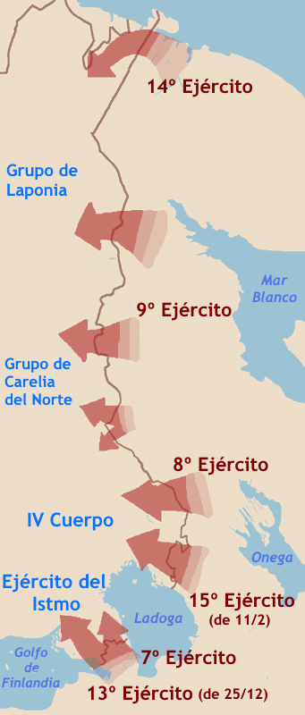

Guerra de Invierno
La invasión de Finlandia por la Unión Soviética, en la que un pequeño ejército finlandés resistió durante más de tres meses a una potencia muy superior.
Datos
| Fechas | 30 de noviembre de 1939 – 13 de marzo de 1940 |
|---|---|
| Lugar | Finlandia, sobre todo el istmo de Carelia |
| Resultado | Victoria soviética (Tratado de Paz de Moscú); Finlandia conserva su independencia pero cede territorio |
| Bando invasor | Unión Soviética |
| Defensor | Finlandia |
| Comandantes | Kliment Voroshilov y Semión Timoshenko (URSS); Carl Gustaf Mannerheim (Finlandia) |
| Consecuencia directa | Finlandia cede Carelia; la URSS es expulsada de la Sociedad de Naciones y su ejército queda en evidencia |
Bandos
Invasor
Defensor
Introducción
Tras el pacto Molotov-Ribbentrop, que situaba a Finlandia en la esfera de influencia soviética, la URSS exigió a los finlandeses cesiones territoriales para "proteger" Leningrado. Ante la negativa finlandesa, el Ejército Rojo invadió el país el 30 de noviembre de 1939.
El mundo esperaba una victoria soviética rápida, pero Finlandia resistió con una tenacidad sorprendente, aprovechando el terreno, el clima extremo y unas tropas muy motivadas. La guerra reveló las graves deficiencias del Ejército Rojo tras las purgas de Stalin.
Razones
- Seguridad de Leningrado: la frontera finlandesa estaba a solo 32 km de Leningrado; la URSS quería alejarla.
- Esfera de influencia: el protocolo secreto del pacto germano-soviético asignaba Finlandia a la URSS.
- Exigencias rechazadas: Moscú pidió territorios y bases; Finlandia se negó, y la URSS fabricó un incidente fronterizo (el "cañonazo de Mainila") como pretexto.
Cuerpo (desarrollo)
El Ejército Rojo atacó con enorme superioridad numérica, pero se estrelló contra la Línea Mannerheim, en el istmo de Carelia. En los bosques nevados, las tropas finlandesas —muchas sobre esquís, vestidas de blanco— aplicaron las tácticas motti: cortar y rodear en pequeñas bolsas a las columnas soviéticas, inmovilizadas en las carreteras.
Durante el crudísimo invierno, los finlandeses infligieron pérdidas desproporcionadas. Sin embargo, en febrero de 1940 la URSS reorganizó sus fuerzas bajo Timoshenko y lanzó una ofensiva masiva de artillería y blindados que finalmente rompió la Línea Mannerheim. Agotada y sin ayuda exterior suficiente, Finlandia pidió la paz.

Mapa general de la Guerra de Invierno en español (Wikimedia Commons): los ejes de ataque soviéticos y la resistencia finlandesa.
Conclusión
Por el Tratado de Paz de Moscú (marzo de 1940), Finlandia cedió Carelia y otros territorios (un 11 % de su superficie), pero conservó su independencia. La URSS logró sus objetivos territoriales a un coste altísimo en bajas.
- El pobre desempeño soviético convenció a Hitler de que la URSS era militarmente débil, animándole a planear la Operación Barbarroja.
- Stalin emprendió una profunda reforma del Ejército Rojo a partir de las lecciones aprendidas.
- Finlandia, resentida, se acercaría a Alemania y participaría en la llamada "Guerra de Continuación" desde 1941.
Curiosidades
- Simo Häyhä, "la Muerte Blanca": francotirador finlandés al que se atribuyen más de 500 bajas, uno de los más letales de la historia.
- El "cóctel Molotov": los finlandeses bautizaron con ironía sus bombas incendiarias caseras en honor al ministro soviético Mólotov.
- Tropas fantasma sobre esquís: las unidades finlandesas de esquiadores aparecían y desaparecían en el bosque, desmoralizando a un enemigo atado a las carreteras.
Teorías
Debates e interpretaciones historiográficas, presentados como tales:
- ¿Debilidad real o mala planificación? Se discute si el desastre inicial soviético se debió sobre todo a las purgas de Stalin (que descabezaron el mando) o a una planificación deficiente y exceso de confianza.
- El efecto sobre Hitler: se debate cuánto influyó la mala imagen del Ejército Rojo en la decisión alemana de invadir la URSS en 1941.